The briefing editor component was completely rewritten for version 1.8. It is a significant improvement over the previous version, with several quality of life features. This comprehensive document is meant to explain as much as possible. Even if you're familiar with briefings, you might be able to learn some tips that may not be immediately obvious.
Breakdown of all tabs and components in the main screen.
The new briefing editor has been completely rebuilt from scratch, packed new features and quality of life improvements. Here's a quick rundown of some new features over the previous version:
The new briefing editor strives for visual accuracy with the original games in the series. To accomplish this, it loads resources like icon graphics and text fonts directly from the game installation. Make sure your game installation paths are assigned in YOGEME's options menu.
Note that if you have mods like XWA Upgrade or XWVM, pixel accuracy isn't possible as the rendering engines are modified and may appear slightly differently.
When you first load the briefing, look in the bottom right corner of the window. There is a status line displayed there. On an empty briefing, you should see Assets Loaded OK. This means all resources are loaded and ready.
If you see Font ERR, Icon ERR, it means the installation paths haven't been assigned properly, or the expected resources could not be loaded for some reason. Switch over to the Editor Options tab and check the load report. It will tell you which icons and fonts are loaded, and from where.
It's best to target the 1998 Windows Special Edition version, since it contains assets for all versions. The 1994 DOS CD version may bundle its resources into a CD image, which cannot be loaded. The 1993 DOS Floppy version may be lacking some resources entirely.
Alternatively, X-Wing will attempt to load TIE Fighter assets if TIE Fighter is installed, since the fonts are compatible and most of the icons are similar enough that they can be substituted.
If you prefer not to target a specific version, you can install the required archives by copying them directly into YOGEME's folder. These are XWING.LFD and BWING.LFD
Unlike X-Wing, the briefing looks the same no matter which version of the game you use.
If you prefer not to target a specific version, you can install the required archives by copying them directly into YOGEME's folder. These are EMPIRE.LFD and PLAYER.LFD
Simple here, just target the platform.
Simple here, just target the platform. However if you have XWA Upgrade 2025 or a mod based on it like TFTC, then YOGEME will not correctly replicate the HD graphics or fonts.
There are several hotkeys, and interactive shortcuts with the mouse, to make things easier. If you have trouble getting hotkeys to work, hover the mouse over the map or timeline. Sometimes clicking on the map or timeline can help. If all else fails, try alt-tabbing away from the briefing window then back in.
Map only:
Timeline only:
Both Map and Timeline:
Map, Timeline, Strings Tab, Events Tab
Map only, XWA specific:
Map - Path Mode (XWA only)
Map - Panel Mode (X-Wing only)
Event interactions:
This is a listing of all event command instructions that can be used in a briefing. Not all events are available for every platform.
The title changes the text at the top of the page in the title space. This is only for X-Wing and TIE Fighter. XvT and XWA derive their title directly from the mission list file and cannot be changed with this event.
The caption changes the text at the bottom of the page in the caption space. X-Wing, TIE Fighter, and XWA all feature in-game audio that plays for each caption, as determined by its string slot. The audio itself, or even which files to play, cannot be directly controlled here (unless you happen to choose an unused string slot). Therefore, if you are editing or replacing existing missions, the old audio lines may still play in-game. Audio playback within YOGEME is only supported for XWA.
Change the string slot in the dropdown, and use the edit box to modify the chosen string. See the String Controls for more information and any special formatting characters.
Once a Title event is created, all new Title events will automatically select the first title, as is customary in most LucasArts missions.
Typically most string changes are preceded by a Page Break event. If Auto Page Break is checked, creating either a Title or Caption will automatically insert a Page Break event. If creating a Caption event for X-Wing or TIE, it may also autocreate a Title event.
Once created, you can select these events by clicking their respective panels on the map. For navigation purposes, right clicking a caption will jump to the next caption.
In X-Wing, a Page Break event is required before displaying a new string.
For X-Wing only. If these panels are enabled in the page template settings (see X-Wing Page Options Tab), and the panels have a non-zero size, these buttons will be available to assign strings. They behave exactly like caption strings, but instead operate on their respective panels. All of the same options and rules apply.
When creating these events, use the toggle buttons to select whether FG Tags or Text Tags should be cleared, then click OK.
In X-Wing, you must clear tags before reusing a tag slot.
Displays an animation that draws attention to a flightgroup icon. When the animation finishes, the icon will remain highlighted.
When creating a tag, the tag number dropdown will automatically choose a free slot depending on which ones are known to be in use. If you manually choose, the dropdown items will indicate which slots are in use, either now or later. Note that X-Wing only has four tag slots. All other platforms have eight.
Choose a flightgroup in the dropdown list, or click on a flightgroup icon on the map. The chosen flightgroup will have a bracket indicator surrounding it.
In X-Wing, you must use a Clear FG event before reusing the tag slot.
Display a short piece of text anywhere on the map.
When creating at tag, it will automatically choose a free slot depending on which ones are known to be in use. If you manually choose, the dropdown items will indicate which slots are in use, either now or later. Note that X-Wing only has four tag slots. All other platforms have eight.
In X-Wing, the color cannot be changed. In all other platforms, there is a dropdown containing a list of available colors. Which colors are available varies depending on game.
Some colors are marked with an asterisk (*). These are overflow colors. Not intended for use by mission designers, but are technically available as undefined behavior. As such, these tag animations may produce bizarre results, especially in TIE Fighter, as they access palette colors that weren't arranged to be used this way. Note that missions ported to different engines, or newer engines like XWVM, may not be able to use these colors. Recommended to use the proper colors.
The position on the map is marked with a bracket. Click and drag the bracket on the map to change its position. See the Position Controls for more information.
See the String Controls for more information on strings and any special formatting characters.
In X-Wing, you must use a Clear Text event before reusing the tag slot.
Performs an animated scroll from one position to another.
Just like free look mode, you can right-click-drag to move the map to the desired position.
Or use the scrollbars that appear to the right, or below the map.
Or use the numeric controls to choose a specific value.
Or the arrow keys on the map, using the increment in the dropdown.
The range of motion in each scrollbar is intentionally limited to make them easier to use (since you probably won't need to navigate to the extremes of the map), but the numeric controls and mouse panning are unrestricted.
If creating this event while in free look mode, it will automatically use the current free look position. If the current position contains a zoom adjustment, a bonus Zoom Map event will be created too.
When editing an existing event, it uses a special mode. See Map Shift Mode for more information.
Performs an animated effect, zooming in or out.
Just like free look mode, you can use the scroll wheel to adjust the zoom.
Hold [Shift] for small increment, or [Ctrl] for large increment.
Or use the scrollbars that appear to the right, or below the map.
Or use the numeric controls to choose a specific value.
The range of motion in the scrollbars is intentionally limited to make them easier to use (since you probably won't need to zoom in to microscopic levels), but the numeric controls are unrestricted.
The Link checkbox synchronizes both axes, but you can adjust individual axes if you really want to.
If creating this event while in free look mode, it will automatically use the current free look zoom. If the current location contains a position adjustment, a bonus Move Map event will be created too.
When editing an existing event, it uses a special mode. See Map Shift Mode for more information.
Creates a page break. Technically this command clears the title and caption panels. In X-Wing, it also clears the extra panels. In X-Wing, it is required to clear a panel before a new string can be assigned.
It is standard practice in most LucasArts briefings to include a page break before all Title or Caption events, except at the beginning of the briefing. If you create a Title or Caption event, there is an option to automatically generate a Page Break too.
Page breaks will automatically insert at the top of the column, before any other events at that time.
This was an older break sometimes used in X-Wing text pages. It served as a stop point when clicking the page number box in-game.
LucasArts missions typically rely on a Page Break event instead. This event is generally unused outside of X-Wing, but it is still available and functional when clicking to advance through a briefing.
This is not a real event. It allows you to interactively create briefing flightgroups directly on the map, displaying their craft icons. Briefing flightgroups are completely separate and distinct from mission flightgroups. Briefing flightgroups are purely cosmetic and do not affect gameplay.
See Waypoints for more information. In the main YOGEME window, in the Flightgroup Craft tab, there is a button: Switch to BRF (or back to XWI). This feature is an alternative to creating flightgroups there, with the added bonus of easily changing position without needing to use the Waypoint tab.
A bracket highlights the position on the map where the new craft will be. See Position Controls for more information.
The craft dropdown changes the icon graphic. Can be a craft, nav buoy, asteroid, planet, anything. There are several miscellaneous icons of unknown type and purpose. Some of them seem to be training gates.
The IFF determines color. X-Wing is special in that it has a "Default" IFF which attempts to automatically select an IFF based on craft type. By default, Rebel craft are green, Imperial are red, transports and others are blue. Or choose a specific IFF. IFF has no effect for most miscellaneous objects like asteroids or planets. Use Default IFF for those.
You can choose the name for the flightgroup. If the player pauses the briefing in game and hovers the mouse over an icon, it will display a popup with the flightgroup name. Ideally it should match something that exists in the mission.
You can delete icons by selecting them on the map and pressing the [Delete] key. You must have at least one icon remaining on the map. If you don't want it to be visible, use free look mode and move the icon somewhere outside the visible area.
Note: if you're just starting a briefing, consider switching to BRF Mode on the craft tab in the main YOGEME window. Then click Import FGs from XWI in the bottom right corner of the craft tab. This will copy all flightgroups from the mission into the briefing, with the correct craft types and names already assigned. Then all you have to do is open the briefing and position everything where you want.
Activates a new craft icon on the map. When creating a new event, it will automatically choose a free slot.
Choose the craft type and IFF color from the dropdown boxes.
If you click on the map, it will auto create a position. Once the position has been placed, a bracket will appear around the selected location. Move the position by dragging it, or shift clicking the map. See the Position Controls.
If a position is assigned, you also have the option of choosing a rotation for it. For convenience, you can use the bracket [] keys to rotate.
When creating a new icon, it can automatically generate all three events (icon, position, and rotation) at the same time. If no position or rotation is specified, the icon defaults to the center of the screen.
If you choose None for a craft type, this will deactivate an existing icon, causing it to disappear from the map. When the craft type is None, you may click an existing icon on the map to choose that slot for deactivation. Alternatively, [Ctrl+Click] an existing icon will automatically set up a deactivation by choosing both the icon slot and setting craft type to None. A red X may appear on the map indicating that the icon will be deactivated. Although the X can be moved around, deactivation will ignore the position and rotation controls.
Instead of creating a None event manually, you may also select an icon on the map and press [Backspace] to automatically create a deactivation event.
Moves an icon to a new position on the map.
If creating this event, the last used or selected icon will remain chosen. A bracket will appear around the icon's position. If the icon is deactivated, the icon will be grayed out.
If an existing event is selected, you may use the Directional Controls to easily create new positions. Path Mode is also available. Both of these methods allow creating movement without having to manually place every single step yourself.
If Waypoint Shadows is enabled in the Quick Options menu, all steps of movement outside the current time will be visible and grayed out. When they're visible, they can be selected and interacted with, like any other event.
Rotates an icon on the map.
If creating this event manually, the last used or selected icon will remain chosen.
A bracket will appear around the icon that's being interacted with. But this event doesn't involve a location, so the bracket can't be moved.
Select a rotation from the dropdown list or use the bracket [ ] keys.
Tip: You'll never need to create this event manually. For convenience, all you have to do is select any existing Move Icon event on the map. Then press the bracket [ ] keys. A Rotate event will be automatically inserted at that time. If the event already exists, it will be modified accordingly.
Transition the map to a new region. Choose one of the four regions from the dropdown box. By default, all briefings start on the first region.
If creating this event, it will be created at the current time, and the current time will then be advanced by one frame. It is typical for new events to follow a region, not coincide with the region time.
Each of the four possible regions contains its own set of icons. If advancing to a new region, all icons will be empty and ready for creation. If returning back to a prior region, all prior icons will reappear on the map, at their last known positions.
Creates a map effect showing the craft information, like shields, hull, etc. The stats are displayed in-game, along with its 3D model. The briefing does not have access to these stats, so they won't be visible. Instead of a 3D model, its 2D icon sprite will be used instead, enlarged in all its pixelated glory.
IMPORTANT: This event uses the craft type as assigned from the New Ship event. If the craft type is None, it may crash the game.
This is basically a special FG tag. You must select an existing icon, because that's how it knows which craft type to use. A bracket will appear around the icon that's being interacted with. But this event doesn't involve a location, so the bracket can't be moved.
Choose a state, either ON or OFF. If creating an event, this may be automatic depending on the current state of the map. If you create an ON state, it will optionally autocreate an OFF state. You can choose the duration that the ship info will remain active on screen. If "Go to time after creating" is checked, the map will automatically jump to the OFF time.
If not creating an event, use the [T, Y] keys on the map or timeline to navigate forward and backward. If the ship info text is visible on the map, you can right click anywhere on the map to jump to the end.
This is a previously unknown command. It creates a "Special Characteristics" paragraph of text that appears above the statistic information displayed in a Ship Info segment.
It uses a caption string for this information. See String Controls. The "Special Characteristics" line cannot be modified.
Note that like the Ship Info command, this also has an ON/OFF state. If creating an event, the initial controls will be automatically chosen based on the current map state.
The string will persist for all Ship Info segments unless deactivated. If creating an ON event, there will be an option to automatically create an OFF event. It will search for the end of the current Ship Info segment and create an OFF event there, if possible.
For an existing event, when the ship info is active on the screen, you may click the left side of the map to select the event for the sake of editing its text.
When creating certain new events (FG Tag, Text Tag, New Ship), it will attempt to automatically select an empty slot. On the Briefing map tab, it uses the currently scrolled position in the timeline. On the Event List tab, it uses the time of the first selected event. With this information, it knows which slots are active, and is able to scan all further events to detect if any slots are activated at a later time.
Slots that are currently active will be marked as (in use). Slots that are activated at a later time within the "block" are marked as (later). If you're editing an existing event rather than creating a new one, the currently chosen slot will be marked with (this).
A "block" ends when certain corresponding events are located.
For a FG Tag event, it searches for a Clear FG Tags event.
For a Text Tag event, it searches for a Clear Text Tags event.
For a New Ship event, it searches for a Region event.
If all slots within a block are currently in use, you will be notified that all slots are full. You will need to determine when to clear existing slots, or determine which slot to replace.
If all available slots are marked with either (in use) or (later), it will choose one of the later slots to replace, but will not notify you.
When creating a Title event, it will automatically select the current title string if one exists. If none exist, an empty string slot is chosen.
When creating a Caption or Text Tag event, it will choose an empty string slot.
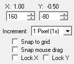
Whenever something with an editable position is selected, the sidebar will display these common controls.
The position in raw map units is displayed in the numeric controls. The labels above indicate the waypoint coordinates. The label units are in kilometers, but the grid drawn on the map is in miles. The unit of measurement here doesn't really matter since moving items on the map is so easy.
The arrow buttons in the numerics can increase or decrease the value. If the text area of the control has keyboard focus, you can use the [Up] and [Down] arrow keys on the keyboard instead of the arrow buttons. Optionally you can type waypoints into the numeric controls as long as you include the decimal separator. For example 1.6. This is equivalent to typing values into the waypoint boxes in the main YOGEME window.
If the mouse is hovered over the map screen, then the map has focus. If you use the [Arrow Keys], it will move the selected items up, down, left, or right. Hold [Shift] while using the arrow keys to move in a small increment (always 1 pixel) or [Ctrl] to move in a large increment (larger than whatever is selected in the Increment dropdown).
The Increment dropdown allows you to select the amount to move per interaction. This applies to clicking the buttons in the numeric controls, using the up or down arrow keys in the numeric controls, or using the arrow keys on the map. This also controls the snap amount if snap is enabled.
The increment can be in pixel or grid amounts. For the purposes of movement, a pixel refers to the map as presented in game, on its original canvas at normal 1x size. Basically the smallest unit amount that is required to move a single pixel at the map's current zoom level. If using grid amounts, it's a fraction of the grid. 1/256 is the smallest unit of movement (1 raw unit). 1/2 is half a grid cell, etc. Grid cells are in miles, not kilometers.
Snap to grid aligns movement to the grid. Depending on zoom level, some grid lines may be hidden. Snap does not account for hidden lines.
Snap mouse drag constrains movements with the mouse when dragging them on the map. The Lock checkboxes can further constrain mouse movement if needed.
Mouse snapping and locking is irrelevant when using the keyboard to move, because it already moves at the specified increments, and only moves in one direction. However Snap to grid does apply to keyboard movements.
If multiple movable items of the same type are selected, a double thick bracket will appear on the map indicating the primary selected item. The primary item is the one displayed in the sidebar.
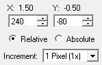
When multiple items are selected, you may see additional controls specifying Relative or Absolute movement. Relative movement maintains formation while moving items. Absolute will forcibly change all selected items to use the exact coordinates you specify. This is for rare situations when you want to align multiple items in precise horizontal or vertical lines. Use with care. Remember that undo is available if you mess up.
Since absolute movement is only useful in very specific situations, relative movement is always selected by default.
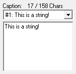
Whenever something with an editable string is selected, the sidebar will display these common controls.
The dropdown box determines which slot is being used. Briefings have a limited number of string slots available. You can choose an existing string, or an empty one. The edit box below is for modifying the chosen string.
The current and maximum string length is displayed above the dropdown. It will refresh instantly in real-time as you change slots or type in the edit box. Changes will also instantly appear in the map.
Depending on the type of string (text tag or caption), you can use certain characters for highlighting or special appearances.
Caption strings (used for titles too) can be centered by prefixing the line with ">". This will center only the current line, until word-wrapped at the right edge of the panel. The default color for centered text is yellow, and that color cannot be changed.
Words or phrases within captions can be highlighted by enclosing them in [brackets]. The result is usually green text, or blue in XWA.
Text tags, displayed on the map, have customizable colors and also accept [bracket] highlighting. Except X-Wing, which does not allow color selection or highlighting.
Captions accept line breaks with "$". If you are typing a caption string, you may press [Shift+Enter] into the edit box to insert a "$" character. This does not work for text tags.
Special color codes are available depending on game platform. These codes are technically not part of the briefing, rather the underlying text renderer used by the game. Which codes are available vary depending on game and string type. Use the map to experiment.
Specify color codes by combining a backslash and a number from 0 to 9. (Example: \2)
Common codes operate the same for all platforms. There is typically no reason to use these, because they can usually be accessed by other known characters.
In XvT and XWA, further colors can be used:
In XvT, you can use \7 for black. This is a non-standard value, not intended to be used by the game, but it does exist. This color is sometimes unstable and may crash the game. For safety purposes, this code is removed when saving a briefing for XWA.
X-Wing displays icons the map according to its list of briefing flightgroups (not their mission flightgroups).
TIE Fighter and XvT display icons on the map according to their mission flightgroups, and their assigned briefing waypoints.
XWA does not use flightgroup waypoints. It has dedicated icons instead. See the Event Command Reference for information on how to use them.
If you select an icon on the map, the Position Controls appear in the sidebar, allowing you to move its waypoint.
In TIE Fighter and XvT, the visibility state can be toggled from the sidebar. In X-Wing, icons are always visible and cannot be deactivated.
The waypoint's flightgroup is displayed for informational purposes. You cannot change which flightgroup the waypoint is attached to.
All of these properties can now be edited here instead of using the flightgroup's waypoint tab in the main YOGEME window. Moving an icon on the map automatically changes its waypoint position. Toggling its visibility state is equivalent to toggling its waypoint checkbox in the main window.
In the Quick Options list, if Waypoint Shadows is checked, waypoints that have been disabled will appear grayed-out, allowing you to select the icon and make further changes.
X-Wing waypoints cannot be toggled off. Their briefing flightgroups must be deleted, or moved outside the visible edge of the map. Note that briefing flightgroups are NOT the same as mission flightgroups. They can be deleted in the briefing editor by selecting them and pressing [Delete]. However, you must always have at least one briefing flightgroup.
While on the map tab, press [P] to toggle Panel Mode. This allows you to fully visualize and interact with the page template customization.
IMPORTANT: It is strongly recommended to leave everything default.
IMPORTANT: Make sure you read the warnings and rendering caveats in the Page Template Controls section before using this feature.
Changes to a template will affect all pages that use it. Typically all text pages use the same template. In the top right corner, it will display which page template is being used, and how many pages are using it.
Click a panel in the list. If the panel is enabled, you may also click it on the map instead. The selected panel will have a magenta bracket around it. The center of the panel will have a cross.
Left click inside a panel and drag it to move it. The Lock checkboxes can restrict mouse movements to a single axis when you're moving the panel. It does not affect resizing.If you hover the mouse over the edge of the panel, the cursor will change to a resize cursor. Drag the edges to resize.
You can also use the keyboard to resize. If the cross is visible in the center of a panel, then using the arrow keys will move the panel in that direction.
Click on the edge of a panel to select the edge. Using the arrow keys will move that edge.
Keyboard shortcuts:
If you make any mistakes, use the reset buttons:
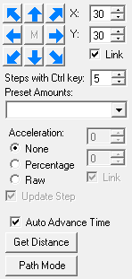
Once an icon has been placed on the map, select any existing Move Icon event or shadow icon. The sidebar will then feature a large selection of controls dedicated to generating eight-way directional movement.
The top part of the sidebar contains the Position Controls. But this is for changing the position for the selected icon, not creating a new one.
There is also a dropdown to change the rotation. You can also press the bracket [] keys on the map. If there is a rotation for that icon at that time, the rotation event will be changed. If there isn't a rotate event at that time, it will be automatically created.
What's new are the directional arrows. Hovering the mouse over any of the arrows will display a preview on the map of where the new icon will be placed. If any of the previewed icons would be generated off screen, a yellow arrow will appear around the edge of the map to indicate that it's outside the visible area.
Directional preview
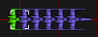
The X and Y numerics control the distance that the icon will move, in raw units. If Link is checked, changing one value will change both. By unlinking, you can create lines of movement that follow different angles.
You can change the number of steps to make continuous lines of movement while holding the [Ctrl] key. Holding [Ctrl] while hovering the mouse over the buttons will display all of the icons that would be generated.
Further down you can control acceleration. If set to None, the icons will generate in a straight line, all points equidistant from each other. The X/Y values to the right are for acceleration. If set to Percentage acceleration, a value of 10 means that the distance will increase by 10% for every new position. If set to Raw, the distance will increase by a flat amount for every new position.
When using acceleration, it's helpful to set a higher number of steps to place all of them at once, and hold [Ctrl] to preview the map. Adjust the values as you see fit. When satisfied with the preview, use [Ctrl] to generate them all.
Acceleration values can be negative. Icons will slow down until the distance amounts are zero. When the distance is zero, no further icons will be generated regardless of the number of steps remaining.
If you choose to make single steps, the X/Y distance values will increase in real time with each button press. When this happens, the memory button will be enabled. This button is marked with [M] in the center of the directional buttons. Clicking the memory button will restore the X/Y distance values from when you started using acceleration.
To change the distance or acceleration increments, you can use the Preset Amounts dropdown. The Grid and Pixel values will update the distance amount, while Acceleration values will change the acceleration amounts. The acceleration presets were derived from AlliEd.
Instead of using the mouse to click the directional buttons, if you have a numeric keypad on your keyboard, you can use that. Make sure NumLock is enabled, or it will interpret the keys as standard arrow buttons. Standard arrows will move the existing icon, not create a new one.
Finally at the bottom, there is a checkbox to auto advance the time. Every step of movement will scroll the timeline to match. If not checked, icon generation will start at the current time and continue into the future until you select another icon.
Get Distance. If you decide you want to add more movement steps, but you don't remember what the original movement amounts were, click this button, or press [D] on the map. It will attempt to find a Move Icon event immediately preceding your current icon selection. If found, it will calculate the distance offset and update the X/Y amounts accordingly.
Note: If you generated movements and decide that you don't like the results, undo with [Ctrl+Z]. Or select one of the generated icons (not the first one), use the expand icon feature to select them all, then press [Delete] to remove them.
Finally, there's Path Mode.
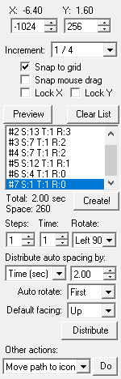
Path Mode is a special feature that allows creation of complex lines of movement, specific angles of movement, or otherwise allows more control over the time spacing when placing movement steps. Select an existing icon or shadow icon position. Then toggle Path Mode by pressing [P], or clicking the Path Mode button in the bottom of the directional control sidebar.
The basic concept is that it works by placing nodes on the map, and creating line segments between them. Each segment can have a number of positions along the line, called Steps. Each segment can have its own rotation.
You must have at least one icon position to start with. This is the Working Icon, denoted by a purple bracket. All steps generated from this tool will proceed from that point.
[Shift+Click] on the map to create a Path Node. Typically a starting node will be generated on the Working Icon. You can shift click multiple times around the map to create additional nodes. Each new node is added to the end of the list. [Ctrl+Click] to insert a node at the front instead.
The Position Controls operate on the selected nodes. TIP: grid snapping can be very helpful to if you want to make perfectly horizontal or vertical segments.
You can see the list of nodes in the sidebar.
Nodes can be selected by clicking them on the map, pressing the corresponding number key [1..9] on the map, or by clicking a node list item in the sidebar.
Below the list of nodes are three main controls. Each node can have the following properties:
Steps: The number of positions, to be evenly distributed along the line segment.
Time: Frames between each movement step. The fastest speed an icon can move is once per frame. However sometimes it can be useful to slow them down.
Rotation: The rotation to apply at the start of the segment.
Assigning these values manually can be tedious. To simplify this, use auto distribution.
In the dropdown, choose a method of unit measurement.
For units of time, the value is the total duration of the path. Either in seconds, or raw number of frames.
For units of distance, the value determines approximately how far apart each icon should be. Either pixels (at 1x scale), meters, or raw. Use whichever unit seems most intuitive for you.
Auto rotate: determines how to apply rotations. If set to None, it will use whatever the working icon has. If set to first or second, it will apply the rotation on the first or second step of each segment. The direction is determined by the segment path as it moves toward the next node, and which axis is the longest. If it has to move further on the X axis, it will favor left or right directions. If it has to move further on the Y axis, it will favor up or down directions.
Default Facing: how to determine which way the craft will be pointing when it traverses a line segment. If a craft is moving to the right, ideally it should point to the right. Different craft types may "point" a certain way, even when no rotation is specified. That is their default facing.
If you're unsure, set the default facing to None, then click Distribute. Note which way the icons are pointing. If they point up, choose Up in the dropdown, then click Distribute again to see if everything is correct.
When everything is ready, click the Distribute button. It will automatically calculate all the steps and rotations for every node. The preview icons will be displayed on the map.
Continue adjusting the values until you like what you see. At any time you can click the Preview button to refresh the preview, which you'll need to do any time you add/remove nodes, or move a node somewhere else. If the preview was generated by auto distribution, click Distribute to recalculate and refresh instead. If you don't like the path and want to start over, click the Clear List button to erase all the nodes.
When you've finished adjusting the path and its parameters, note the total duration and required event space, which is printed below the list of nodes. Placing icons this way can consume a lot of space! When you're ready, click the Create! button.
By the way, if you haven't already, you should probably have shadow icons enabled in the quick toggle options, so you can actually see the icons that have been generated.
Tip: If there are too many icons, consuming too much event space, consider increasing the time for each node. If using auto distribution, you only need to adjust the time on node #1. Auto distribution will copy the time to all other nodes when it calculates the path.
At the very bottom, there is a list of other actions:
Note: If you generated a path and decide that you don't like the results, undo with [Ctrl+Z]. Or select one of the generated icons (not the first one), use the expand icon feature to select them all, then press [Delete] to remove them.
Keyboard shortcuts:
Select at least one shadow icon, or an icon event on the map or timeline, and then press [I] on the map. Or double click a shadow icon on the map, or icon event in the timeline.
All shadow icons and events belonging to that icon will be selected, except the first icon. However if you include the first icon in the initial selection, it will select all shadow icons. The purpose of this distinction is that you can expand the selection and quickly delete a trail of icons without deleting the starting icon. Useful if you placed down several icons, then decide you want to delete them and start over.
The briefing tab is divided into several different spaces containing the map, timeline, playback controls, and the sidebar.
The sidebar is further divided into event creation, event editing, time shifting, and quick toggle options.
The briefing map is the visual representation of the screen that would be visible in game.
It strives for accuracy with the original games, however HD mods like XWVM or XWAU may be somewhat different.
See a more comprehensive list of commands in the Keyboard Hotkeys.
Free look mode, as the name suggests, allows you look around the map. The zoom can also be adjusted. It can be useful to find tags, icons, or waypoints that have been positioned beyond the visible map area. Zooming in can sometimes make it easier to select items that are close together.
While in free look mode, the dotted rectangle displays the original viewing position and zoom level at the current time.
Middle click or press [Escape] to cancel free look mode and return to the original position.
Tip: free look mode can be useful to preview a position or zoom level in preparation for creating Map Move or Map Zoom events. If you are currently using free look mode when attempting to create these events, they will use the free look values.
This is a special variant of free look mode that is used when editing a Move Map or Zoom Map event. There will be two dashed rectangles denoting the starting and ending positions. The darker rectangle is the starting position, and the brighter is the ending position.
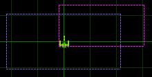
While panning or zooming the map, you are still in free look mode. This lets you get a birds-eye perspective of where exactly it begins and ends. Since both events are often paired together, selecting one will automatically include the other in the preview. For example, selecting a Move Map event will include any applicable Zoom Map event into its preview.
There will be a special control that appears: Apply mouse pan/scroll. It has two options:
Free Look: using the mouse will adjust Free Look only, leaving the event unchanged.
This Event: using the mouse will directly modify the final position of the event, and the rectangle will reposition or resize itself in real time.
Pressing middle click at any time will center the map on the final position, allowing you to see exactly where it ends up, and how it will look in game. To cancel out, left click on nothing or press [Escape].
NOTE: If you select both Move Map and Zoom Map events in the timeline, you can modify both at the same time.
The timeline is the visual representation of all events, relative to other events. It also displays your current time and can be used to move events around through time, or merely to navigate the briefing.
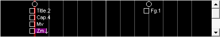
Basic Interaction:
The timeline accepts some shortcut keys that are shared with the map. See Keyboard Hotkeys.
To move events in the timeline, dragging items vertically up or down will change their order in the column, affecting their position in time. Dragging horizontally left or right will move the events through time.
Each vertical line represents one frame in the briefing. The center of the timeline marks the current viewing time, denoted with a double line. Events to the left are earlier in time. Events to the right are later in time. The beginning and end of the briefing are marked with colored double lines.
Events are displayed in a column on each frame. When each frame is run, events are processed in sequence from first to last. If there are too many events in a column to display at once, a vertical scrollbar will appear to the right allowing navigation up and down.
If there are further events above or below the visible scrolled position, there will be a small arrow with a purple background. If an event is selected outside the visible timeline, a yellow arrow will appear on the edge of the timeline to indicate the direction. Middle click to center the timeline over the selected item.
If there are events beyond the briefing duration, any frames beyond the assigned duration will be marked with purple lines.
The navigation controls are below the timeline. From left to right, the buttons are: Beginning, play/pause, stop, fast forward, and end. Although you can use the mouse to control the buttons, navigation is much easier when using the keyboard shortcuts.
Right clicking on a caption will advance to the next caption. Same as [PgDn].
* Context jumps are mostly for extra navigation of XWA's events. If a Move Icon or Rotate Icon event is selected, it will jump to the parent New Ship event. This is useful if you want to change the icon's craft type or IFF. If a Ship Info event is selected, it will jump back and forth between the start and end events.
The sidebar is shared between the Briefing Tab and the Event List Tab, and will appear to the right of the map, or event list, respectively. When you first launch the briefing, the event buttons will be visible. The sidebar changes dynamically depending on what is selected.
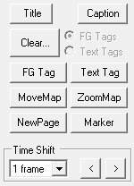
On the event list tab, the sidebar only displays controls for editing the selected event.
On the Briefing map tab, when nothing is selected, there are three main components that are visible:
For information on the kinds of events that can be created, and what they do, see the Event Command Reference. Not all events are available for all games. The buttons will display all events that are supported by the platform.
Time Shift allows you to add or remove time. All events to the right of the currently viewed time can be pushed further out, or pulled in. The increment controls the amount of time to shift every time you click the buttons. Time shift cannot push events beyond the maximum duration, nor can it pull events below the current timeline position.
Quick Options mostly affect visuals on the map during editing or playback. Most of them are self explanatory, and some are specific to certain platforms. See Quick Toggle Options for more info.
This area exists at the very bottom edge of the window, and is visible no matter which tab is selected.
On the left side is the briefing selector. In X-Wing, this lets you select the page. For example, choosing between the map or one of the text or hint pages. XvT and XWA allow multiple briefings for multiplayer teams. TIE Fighter only has a single briefing.
Then there's the duration control.
After duration is the current event space consumed by the briefing. The amount available is determined by platform. The limit is lower in X-Wing, TIE Fighter, and XvT, but you normally won't reach the limit. XWA has a much higher limit, but icon movements can quickly consume event space, especially when using path mode, so this is a convenient way to keep watch. When the maximum space is consumed, events can no longer be created.
Finally, on the right, there's the status text. When you first open the briefing editor in an empty mission, it will display the loading status. If all goes well, it should say "Assets Loaded OK". If not, refer to Setup. If you're loading an existing briefing, it may display a verification error or warning if something is wrong with the briefing. In that case, refer to the Verify Tab. In all other cases, as you make changes to the briefing, it will display the number of undo frames. See Undo and Redo.
The duration controls how long the briefing plays before looping. Normally the duration will be automatically extended as you create new events. See Editor Tab Options to customize this behavior.
Duration can be assigned manually using the numeric control in the footer at the bottom of the window. Normally it only accepts whole seconds, but you can type exact decimal values like 30.5 if you wish.
Alternatively, navigate to a specific frame in the briefing and press [L] (for length). (If you're wondering why it's not [D] that was already used for something else.)
If you set the duration manually, be aware that automatic adjustments may still adjust the length after the fact.
The new briefing editor supports limited multi-level undo and redo via [Ctrl+Z] and [Ctrl+Y], respectively.
Not everything can be undone. Generally anything involving events (creating, deleting, modifying), strings (tags or captions), and briefing duration can all be undone.
In the very bottom right corner of the window, the status text will change as you make edits, reflecting the number of undo frames. Every press of the hotkey will undo or redo a single frame. Sometimes a frame will contain multiple edits.
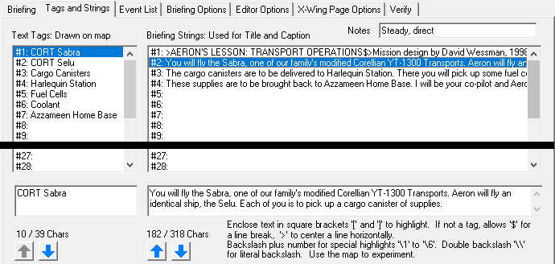
Provides a full overview of all tags and strings slots. Text tags are displayed on the map, while the caption strings are used for everything else.
Tags and caption strings are separated into different columns. Click on a string to display its full string in the appropriate edit box at the bottom. The string will update dynamically as you type. The counter shows how long the string is, and the maximum allowed length of the string. Exceeding the length may crash the game, so it's important to stay within the limit. If the string is too long, the length will display in red and there will be a warning prefix in the list. There will also be a verification error issued on the Verify tab.
String order can be re-arranged by clicking the Up or Down arrows. This can be especially useful for captions if you decide to add or remove captions at a later time, and want to keep them in sequence. Tip: to insert an empty slot, it's easier to move an empty string from the bottom up, rather than moving everything down.
Tip: You don't have to click inside the text box to begin editing. You can double click a string in the list, or select a string and press [Enter], or [F2]. It will automatically shift focus to the input boxes below.
Tip: You can copy and paste strings to/from the system clipboard by using the Cut, Copy, and Paste shortcut keys. Just click the list item and press the shortcut keys.
Tip: You can undo string changes, including moving up and down, with the Undo and Redo shortcuts.
In the bottom right, there's an informational panel indicating certain special characters that can be used for string formatting. Typically they're meant to be used for caption strings, although text tags may accept certain characters depending on platform. Use the map to experiment.
Finally, in XWA, there is a Notes field above the caption list. This does not affect the briefing. It mainly served to provide information to voice actors on how to deliver each line. Each caption string has its own attached note.
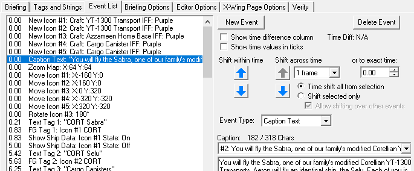
With the improvements to the map page, the event tab is somewhat less important. However it's much more compact than the timeline, and makes bulk interactions much easier, especially for shifting or deleting.
The list allows for multiple selection. Drag the mouse over multiple items, or [Shift+Click] to select a range, or [Ctrl+Click] click to toggle individual items.
Selection is shared between the map and event list, so it can be a useful way to find items. For example, select an item, then switch back to the map and middle click to jump to that event.
The top right contains basic controls for creating or deleting events, or shifting them around. If something is selected, the context-based sidebar controls will be visible further below. Some of the sidebar controls may have their layout adjusted to better fit the available space, and some map-specific controls may be disabled, but their primary behavior is unchanged.
New Event: creates a new event after the currently selected item. The new event will always default to a page break. Use the Event Type dropdown (below the time shift controls) to choose the desired event type. See the Event Command Reference for possible events.
Delete Event: deletes all selected events. You can also press the [Delete] key while the event list has focus.
Show time difference column: Shows a separate column indicating how much the time changes after each event. Can be useful to visualize the time flow, but it's still not as good as the timeline.
Time Diff: If you select multiple events, it will measure the time difference between the first and last selected events and display the amount here.
Show time values in ticks: Only necessary if you have a data-level interest in the raw times.
Shift within time: For any collection of events grouped at the same time, allows you to reorder them. This is equivalent to dragging items up or down in the timeline. The buttons will refresh based on the selected events and whether they can be moved in either direction.
Shift across time: Adds or removes time to events. The buttons will refresh based on the selected events and whether they can be moved in either direction. The dropdown underneath controls the amount of time to shift.
Exact time: Specify the exact time for a move or shift. It will be either seconds or raw units depending on whether "time values in ticks" is selected.
The following controls affect both Shift Across Time, and Exact Time:
Event Type: Manually changes the event command into something else. Normally you don't need to use this, except after using the New Event button at the top. See the Event Command Reference for possible events. NOTE: If you select a Text Tag or FlightGroup Tag, the event will be the same as the tag number, and changing the tag number will also change the event too. For these events, it's the same thing.
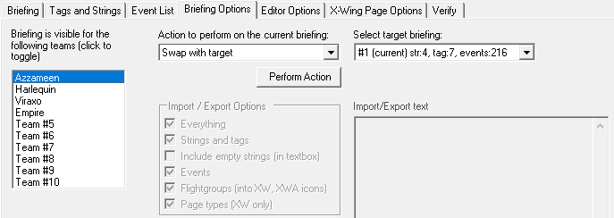
Advanced briefing management controls. You normally won't need to use this tab for standard editing.
Important! Nothing on this tab can be undone, use with care.
In the top left, you can toggle the team visibility for multiplayer missions by clicking individual teams in the list. This is only available for XvT and XWA.
Everything else on this page is related to the briefing actions in the central dropdown box. Some of the management options are only intended for platforms with multiplayer briefings (XvT, XWA). Other options like import/export, or erase briefing, may be useful for all platforms.
Exporting strings may be useful for copying and pasting into a word-processor for spellchecking, or perhaps for translation. Importing and exporting entire briefings is kind of like a full briefing copy/paste. Importing also works between different games, performing a crude conversion, but some of the events may need further adjustment to appear correctly on the map. It's more useful to import a mission from the same platform.
For actions with a target briefing, use the dropdown on the right side. The current briefing is always whatever is selected in the footer at the very bottom of the window. For certain actions like Swap or Duplicate, the target briefing must be different from the current briefing.
The checkboxes control specific items for import/export, if you want to pick and choose particular sections. However, when using text imports, the section must also exist. When a section is imported, any existing data is replaced.
The text imports are generally not meant to be edited by hand, although it is possible. If you're savvy with programming, you could even generate fancy movement patterns for icons in XWA. The import is not very robust, so there may be parsing errors and missing information if you make mistakes.
Flightgroups: TIE Fighter and XvT cannot directly interchange flightgroup icons, because icons come from flightgroup waypoints, and the list of flightgroups is central to the mission itself. However because X-Wing uses a separate list of briefing flightgroups, and XWA dispenses with the flightgroup concept in favor of anonymous icons, it will allow you to transfer icons into, or from, those two platforms.
Page Types (X-Wing only): This checkbox could be useful if you want to copy custom panel templates from one mission to another, rather than trying to recreate them manually. See X-Wing Page Options Tab.
Customizes certain aspects of the briefing editor (not the briefing itself). Also displays the load status report if something was wrong.
NOTE: All options here, along with Quick Options and various other checkbox settings throughout the form, are stored per-platform. You can have different map sizes for different games.
Determines how to stretch the map to fit the size of the briefing window.
Dynamic to window: Stretches the map dynamically according to the window size according to available space. Always preserves the aspect ratio of the map.
Fixed size: Uses the multiplier from the numeric box underneath.
Auto nearest when whole: Uses Nearest Neighbor filtering if the multiplier is exactly 1.0, 2.0, etc.
Scaling Interpolation Mode: Changes which scaling method is used by Windows when drawing the canvas. Generally you'll want either Bicubic or Nearest Neighbor.
Bicubic is anti-aliased, somewhat blurry but seems to have the best quality. Nearest Neighbor does not have anti-aliasing. If you want clean, sharp pixels, it's especially great for TIE Fighter, but it only looks good on fixed sizes with whole numbers, otherwise the stretching can look strange.
Other scaling modes are available. If you encounter performance problems on lower-end hardware, it might be worth experimenting. High Quality Bilinear and High Quality Bicubic are actually worse, they're intended for scaling down, not up.
Font size: Changes the font and pip size in the timeline, independently from the window.
Minimum rows: Changes the number of rows which are always visible in the timeline, regardless of how the window is sized.
Show Free Look Info: Displays the position and zoom level for informational purposes.
Timeline Playback: If during playback, you find the animated timeline movement distracting, you can disable it here. When unchecked, the timeline will become hidden during playback, and return when paused.
Events auto extend duration: Normally any changes to events will automatically extend the briefing duration, so that the total duration is long enough to display the last event. This controls how far to extend the duration beyond the last event. It can be disabled entirely if you want manual control over the duration. Note: The duration can be assigned at specific value at any time, but further changes to any events may trigger automatic extension if enabled.
Displays the status of loaded icon graphics and text fonts, and where they came from. Useful if the editor is unable to load the original assets and you want to determine why.
In this tab, there's full control over everything that's specific to X-Wing. If you want to add text pages, this is the place. If it's a Death Star surface mission, you can toggle that too.
X-Wing is unique in the series, with a page template system that is fully customizable, even though it really isn't used much, and was removed in TIE Fighter onward. Although you can customize the templates, it is recommended to leave it alone.
Think of the page number displayed in game. A typical mission begins with a map on Page 1, and there are additional pages that display only text. These are all pages, and this is where they're created.
The list on the left displays the pages and their types. The controls inside this panel will operate on the selected page.
Arrow buttons: Moves the selected page up or down, reordering the list. NOTE: Although it's not strictly required, the first page should always be the map.
Delete button: Removes a page. NOTE: you can't delete the last page, you must have at least one.
Page Type: This dropdown changes the template that the page uses, from the available templates displayed on the bottom half of the screen. Generally you won't need to use this.
Waypoint Set: Missions were designed to allow multiple sets of waypoints. They function sort of like the team waypoints in XvT. You can ignore them here. LucasArts standard is to have 2 sets of waypoints, while only ever using the second set. Recommended to leave this alone.
This is where you can create new pages. Typically this is for creating text pages. You can have a maximum of eight pages.
Choose the page type in the drop down. Either a map page, (title, map, caption). Or a text page (title and caption only).
A hint page is just a text page with some extra set up. A string for the hint text is automatically generated, if it doesn't already exist.
If the title and caption strings are already written, you can check Use Strings Above and choose the strings in the dropdown boxes. Otherwise, if Generate Placeholders is selected, the page will be created, but with a placeholder string that you can edit later.
When ready, click the New button to create the page. The new page will appear in the Pages list on the left, and will now appear in the briefing list in bottom left corner of the footer.
This defines the layout of the pages. Whether they're visible, and their size and location within the briefing screen. These parameters can be changed, with some limitations.
It is strongly recommended to leave the default settings!
That said, the primary distinction of a page template is whether the map is visible or not. Therefore a page is either Map or Text, regardless how the panels are defined.
The map is one panel, and each textbox, like the title, and caption, are all different panels.
New templates can be added or removed with the Add and Del buttons. There are a maximum of 4 templates, and for the sake of simplicity, there is a minimum of 2. Two is the standard for LucasArts briefings.
Clicking on a template on the left will refresh the list on the right. The right list displays the five possible panels. There are four text panels, plus the map. Title and Caption are always used. Panels three and four are available but are typically deactivated. Then finally the map panel.
If you insist on customizing any of the templates, it's recommended to use Panel Mode instead. Go to the map tab and press [P] to toggle panel mode. It's much easier to see how your changes will affect the final result, if at all.
If you mess something up, or just want to return to defaults, select a template then click the Map button to restore the default settings for a Map page, or the Text button for a text page. Clicking Full Reset will completely erase all templates and restore the two default Map and Text templates.
See Page Template Controls for instructions on the panel controls, which are shared with Panel Mode. IMPORTANT! Warnings and version differences are also explained there.
Here you can check whether it's a Death Star mission. It simply changes the background color of the briefing. That's it.
You can also change the max waypoint sets, up to three, or down to one. It's best to leave this alone.
Clicking on any of the five panels in the panel list refreshes the parameter information. Here you can define the location and size of the panel. The values here correspond to pixels in the 1994 DOS CD version. The full briefing canvas begins at (0, 0) and has a maximum size of (212, 138).
The Visible checkbox determines whether the panel is displayed in the briefing, and the coordinates define the location of the rectangle.
If you're designing missions for X-Wing 1994, Text Lines is probably the only feature you may want to use. Typically the caption is large enough for two lines of text, but some missions increase the size to hold three lines. Changing the Text Lines value will automatically adjust the Top and Bottom values to accommodate the requested number of lines. The number of lines can be changed for any panel. If using it for the caption, make sure the caption panel is selected first.
WARNING! Make sure the text panels are wide enough to hold ENTIRE WORDS. Normally word-wrap allows you to write long sentences, but if any individual word is larger than the entire panel, the game may hang or crash.
WARNING! As mentioned, it is strongly recommended to leave these settings default. But why, you ask? X-Wing 1994 DOS CD, X-Wing 1998 Windows (Special Edition), and XWVM all have different rules for rendering the map and text! This makes template customization much less useful, as every version treats it differently.
In 1994, the panels are rendered in order, from top to bottom. The map is rendered last, and will overlap any text panels underneath.
In 1998, if the map is enabled, the rendering rules are changed to an explicit stacking order. The title is always at the top, the map is underneath the title, and the caption is underneath the map. The stacking order cannot be changed. The caption is always extended to the very bottom of the display area. There are also minimum heights enforced for the title and caption. These rules make the Top and Bottom rectangle positions, and Text Lines control largely meaningless.
XWVM presently ignores most of these properties, and has its own text rendering rules. XWVM also expects the first page to be a map page. If you insist on editing these, proceed with caution and test them well in their intended game. Even if you make a custom mission intended for the original games, using crazy template layouts, someone may attempt to play it in XWVM too.
Verification attempts to find simple problems in the briefing. Errors are usually severe problems that you should fix, as they can often crash the game or produce unexpected results. Warnings are usually suggestions that something should be fixed. Some warnings are quite mild or inconsequential. Even LucasArts missions sometimes have mistakes.
If any tag or caption strings are too long, they will be reported here. If an X-Wing panel is oddly configured, it will be reported. In XWA, if there's a Ship Info segment that isn't properly opened or closed, it will be reported. Plus many more kinds of logic or data problems.
The Verify button will scan for issues and display the results in the textbox below.
The Repair button will attempt to automatically fix certain errors. If a string is too long, it will be truncated to its safe length. If a value is outside the acceptable range, like a negative IFF number, it will be clamped to an acceptable value. When the repair is finished, the results will be displayed in the textbox. Some errors may need to be fixed manually.
In the map tab, when nothing is selected, these options will be available in the bottom right corner of the window. They affect various aspects of map playback, for visual or audio purposes. Some of them are platform dependent.
High Def - XW98 (X-Wing only) - This selects the resolution of the map canvas. If checked, it will use the high definition resolution and fonts. High definition referring to the 1998 Windows Special Edition. If not checked, it mimics the resolution of the 1994 DOS CD version. Typically it won't matter which mode you're using for editing, however when finished you should test how it looks in both versions, especially if you're customizing the page templates. Note that XWVM generally follows the design scheme of the 1998 version, but does not honor custom templates.
Loop Playback - Immediately loops back to the beginning when playback reaches the end of the briefing. Useful to test the duration of the final caption, to make sure it appears long enough to read before the briefing restarts. This can also be helpful when testing audio in XWA.
Animate Move/Zoom - Displays the authentic map position at every frame while scrolling the timeline, or during playback. If not checked, the map will immediately jump to the target position and zoom. Generally best to leave this checked.
Animate Tags - Displays icon convergence animations for flightgroup tags, and animated text scrolling for text tags. If not checked, tags will always display their final frame. Several flightgroup tags can introduce clutter, and unexpanded text tags can be hard to click on. Unchecking this can make it easier to select things on the map in certain situations.
Waypoint Shadows (TIE, XvT only) - When this box is checked, flightgroups that have their briefing waypoint disabled will still appear grayed out on the map, allowing you to interact with them.
Team and Player Labels (XvT, XWA only) - Displays the team name in the top left corner, as it would appear in game. Although the label obstructs part of the map, knowing where it is can be helpful to avoid putting something there like a text tag. In XvT, it also displays the player numbers next to playable flightgroups.
Play Caption Audio (XWA only) - If a mission is loaded from the Missions folder, it attempt to automatically load and play the corresponding audio for every caption event.
Animate XWA Effects (XWA only) - Animates transition effects for Region events or Ship Info events. Important for timing purposes when playing audio, but can be annoying if you want to quickly play through the briefing and focus on more important things.
XWAU Framerate (XWA only) - Mimics the 24 FPS framerate in XWAU. Although vanilla XWA was apparently designed for 24 FPS, it actually runs slower around 21 FPS. Important for timing if you're trying to set up caption audio. If a mission is loaded from the Missions folder, it will attempt to auto-detect whether XWAU is installed and adjust this option accordingly.
MoveIcon Shadows (XWA only) - Toggles the display of all shadow icons. Shadow icons are very useful when planning icon movements. However when you've finished placing icons and want to play back the briefing as it would appear in game, uncheck this. The dropdown box underneath can be used to focus on a specific ship and hide the rest.